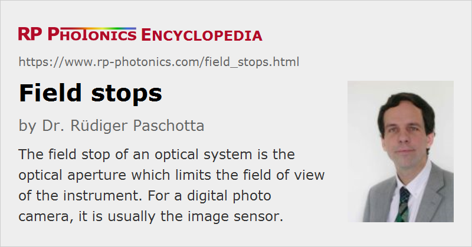

Field Stops
Definition: apertures which limit the field of view of imaging systems
German: Feldblenden
Categories: general optics, vision, displays and imaging
How to cite the article; suggest additional literature
Author: Dr. Rüdiger Paschotta
The field of view of an imaging system, i.e., the angular range in which objects can be imaged, is always limited by some kind of optical aperture, which is called the field stop. Different apertures can play that role:
- In a digital photo camera, the limited size of the image sensor usually limits the field of view: light from more extreme angles might still get through the optical system, but would not hit the image sensor and therefore not contribute to the image.
- A field stop can also be a diaphragm which is located in an intermediate image plane.
- Sometimes, an optical aperture results from the construction of the instrument.
If an optical system contains multiple apertures, the field stop is that aperture which most severely limits the field of view.
Note that an optical aperture does not lead to sharp edges of the field of view, if it does not lie in a plane conjugate to the object plane. There is then some vignetting effect, i.e., a gradual decrease of image brightness at the edges. In a Keplerian telescope, for example, the field of view is limited by the ratio of the diameter of the ocular lens (essentially the barrel diameter) and the focal length of the objective. The field stop is then the barrel. As the barrel entrance is behind the intermediate image plane, there is some vignetting.
Questions and Comments from Users
Here you can submit questions and comments. As far as they get accepted by the author, they will appear above this paragraph together with the author’s answer. The author will decide on acceptance based on certain criteria. Essentially, the issue must be of sufficiently broad interest.
Please do not enter personal data here; we would otherwise delete it soon. (See also our privacy declaration.) If you wish to receive personal feedback or consultancy from the author, please contact him e.g. via e-mail.
By submitting the information, you give your consent to the potential publication of your inputs on our website according to our rules. (If you later retract your consent, we will delete those inputs.) As your inputs are first reviewed by the author, they may be published with some delay.
See also: optical apertures, aperture stops, imaging, field lenses, field of view, vignetting
and other articles in the categories general optics, vision, displays and imaging
|  |
If you like this page, please share the link with your friends and colleagues, e.g. via social media:
These sharing buttons are implemented in a privacy-friendly way!